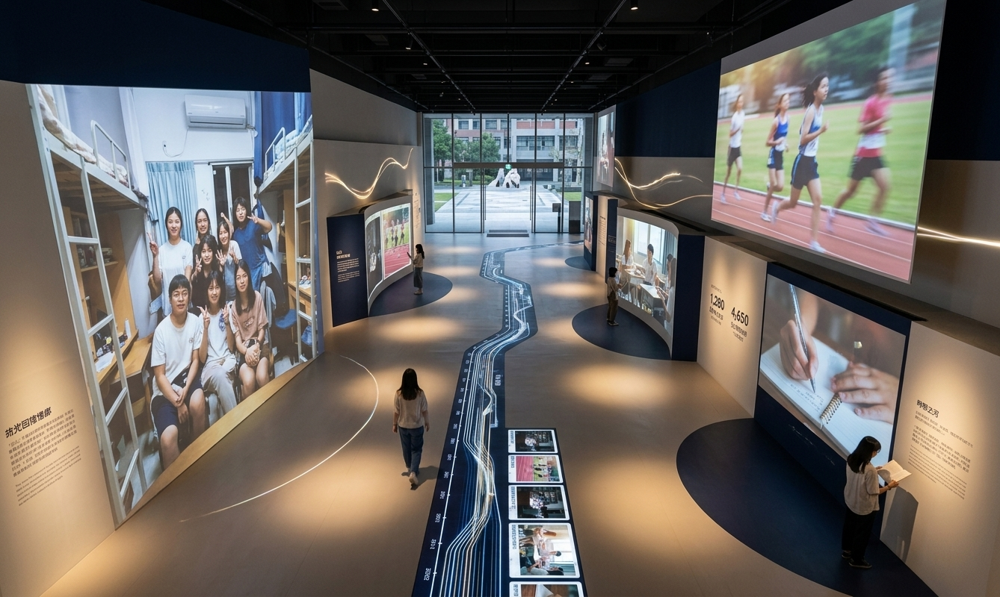

專為所有校園學子設計，紀錄那些在教室、操場、圖書館與宿舍裡微小而珍貴的片刻，為在校生與畢業生打造專屬時光膠囊。

拾光簡述：打造無干擾的純粹書寫與交流環境，將零散的校園日常梳理為溫暖年輪，讓每位學子都能在此找到同頻共鳴。
無論是日常碎念還是重要里程碑，在拾光都能找到安放的位置。
紀錄校園日常、社團熱血與畢業感動的故事篇章。透過溫暖質感的文字版面，沉澱思緒並珍藏真情實感。
上傳並珍藏專屬校園生活照片與即時故事紀錄。從圖書館的斜陽到成發舞台的汗水，封存在高品質數位膠囊中。
串聯在校生的期待探索與畢業生的溫暖叮嚀。打破畢業屆別的界線，讓經驗傳承與青春熱忱相互對話映照。
每一個微小篇章，都是校園時光中不可複製的獨特印記。
期末考前的長木桌、窗外逐漸沉落的晚霞，還有身旁默默奮戰的同學。那些平凡而專注的午後，如今成了最懷念的靜好歲月。
走廊上的回音、一次次修改走位，以及彼此眼裡的堅定。舞台上的幾分鐘，凝聚了整個學期的心血與不可替代的夥伴情誼。
撥穗典禮結束後的午後漫步，校園的每個轉角都映照著這幾年的足跡。畢業不是終點，而是帶著這些微光繼續前行。
準備好將你的校園歲月封存在時光膠囊了嗎？歡迎認識我們的團隊，或立即與我們分享你的珍貴記憶。